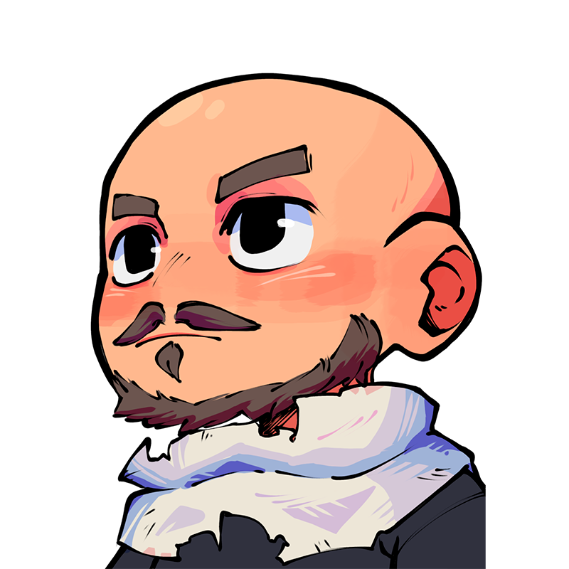

Rassembler
Le Krosmoz s'étend entre jeux, séries, films, mangas, webtoons, livres, quêtes et contenus parfois difficiles à retrouver. Le site sert de point d'entrée pour remettre ces éléments dans un ensemble clair.
Univers Krosmoz
Univers Krosmoz est un site non officiel pensé pour explorer, relier et rendre plus lisible l'univers imaginé par Ankama : ses ères, ses personnages, ses régions, ses œuvres et les récits qui les traversent.

Le Krosmoz s'étend entre jeux, séries, films, mangas, webtoons, livres, quêtes et contenus parfois difficiles à retrouver. Le site sert de point d'entrée pour remettre ces éléments dans un ensemble clair.
Chaque page cherche à replacer un personnage, une région où une œuvre dans son époque, ses liens et ses enjeux, sans remplacer les œuvres originales.
Quand c'est possible, les pages renvoient vers les supports officiels ou vers les plateformes où lire, jouer ou découvrir les œuvres concernées.
Les articles privilégient les sources officielles, les œuvres publiées et les informations directement visibles dans les jeux ou supports Ankama. Les ressources communautaires peuvent aider à retrouver une référence ou croiser une information, mais elles ne remplacent pas les œuvres ni les plateformes officielles.
Certains anciens sites, comme d'anciennes pages liées au Krosmoz, ne sont plus accessibles aujourd'hui. Lorsqu'ils sont évoqués, ils doivent être considérés comme des traces historiques ou des sources secondaires à vérifier, pas comme des sources actuelles.
Liste non exhaustive des références utiles pour documenter les articles du site.